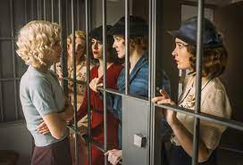
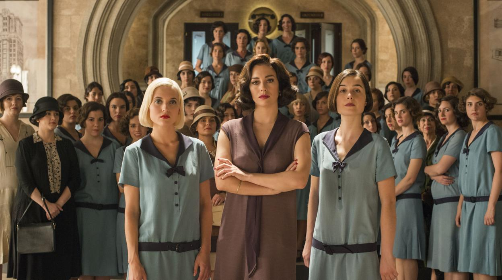
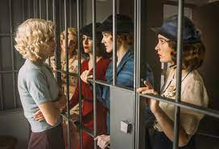
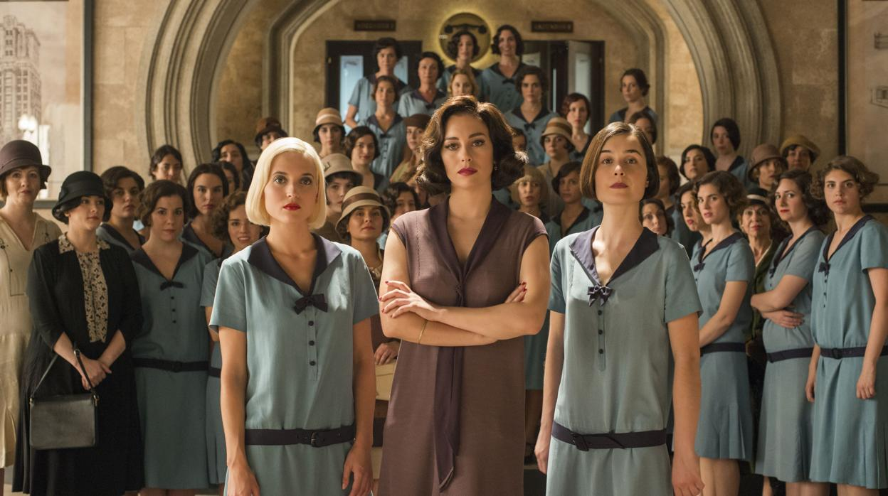

OPINIÓN:
Esta serie a pesar de ser un poco larga te enseña ciertos valores que están bastante bien. Sobre todo la gran amistad que llegan a tener las protagonistas y que a pesar de las dificultades y problemas de cada una de ellas se mantienen unidas e incluso diría que se unen más y se ayudan unas a otras con esos problemas. Además, mientrás van pasando sus problemas también se enfrentan a la lucha por la igualdad en la que ellas quieren ser libres y no depender de nadie y luchan por ello, y a pesar de las caídas lo acaban consiguiendo, cosa de los que muchos deberían aprender a no rendirse fácilmente.
 





Volver